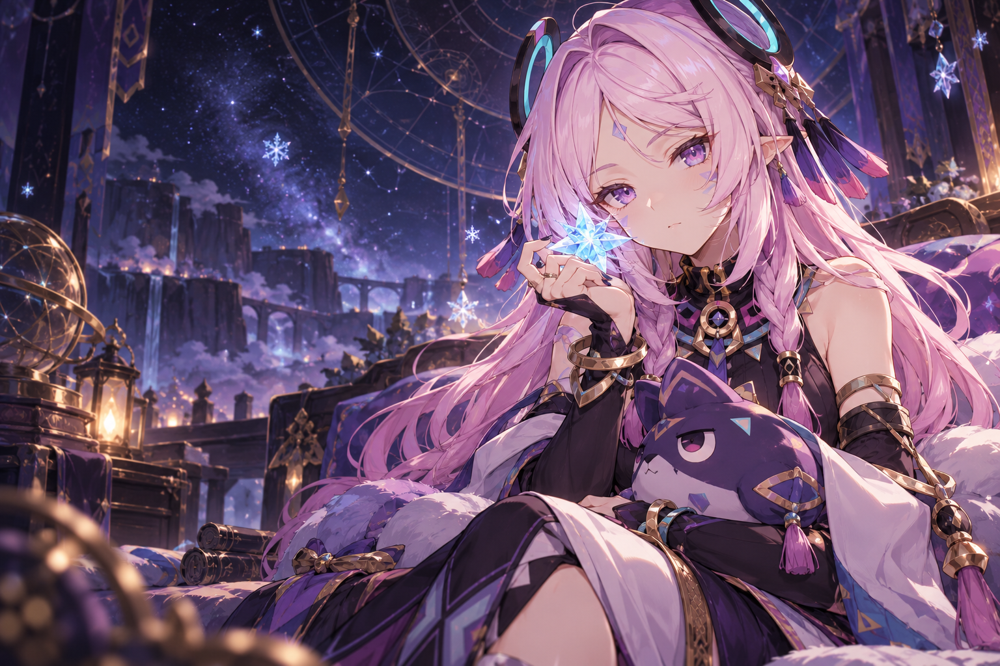

✦ A LITTLE MAGIC. A LOT OF CURIOSITY.
Web Exploitation
Roadmap✧
Dari HTTP pertama sampai flag terakhir.
Peta belajarmu menembus dunia CTF web,
ditemani sedikit sihir Citlali.
⌁ BEGINNER → ADVANCED✧ LEARN AT YOUR OWN PACE
THE LEARNING PATH
Satu topik. Satu langkah lebih dekat.
Klik topik untuk membuka catatan & latihan.
Tandai progresmu, lanjutkan kapan saja.
✧ 0 / 42 topik dikuasai
✦
THE NEXT FLAG IS YOURS.Belajar. Eksperimen. Tulis. Ulangi.
✦